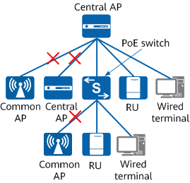

WLAN Architecture
Basic Concepts of WLAN
- Station (STA)
STAs are 802.11-compliant terminals, for example, a PC equipped with a wireless network adapter or a WLAN-capable mobile phone.
- AP
APs provide 802.11-compliant wireless access services for STAs, acting as a bridge between wired networks and wireless networks. APs are categorized as follows:
- Fat AP: provides wireless access for STAs in the autonomous architecture. A Fat AP provides wireless connection, security, and management functions.
- Fit AP: provides wireless access for STAs. It provides only reliable, high-performance wireless connections, while other enhanced functions are delivered by a WAC. Fit APs are further categorized as common APs or central APs.
- Common AP: applies to the centralized Fit AP architecture.
- Central AP: applies to the agile distributed architecture. A central AP can centrally manage and coordinate RUs on behalf of a WAC, delivering functions such as STA access, configuration delivery, and STA roaming between RUs.
- RU: serves as a remote radio module of a central AP in the agile distributed architecture. RUs are used only for receiving and transmitting 802.11 packets over the air interface.
- WAC
In the centralized WLAN architecture, a WAC controls and manages all the APs on the WLAN. For example, a WAC can connect to an authentication server to authenticate STAs. All AP functions, such as AP upgrade and login, can be configured on the WAC. After an AP goes online, the WAC delivers configurations to the AP through the CAPWAP tunnel.
Figure 1 shows a WLAN built in a centralized architecture, where a WAC centrally manages APs. This centralized architecture can be classified as the Fit AP architecture (WAC + common AP) or agile distributed architecture (WAC + central AP + RU). RU is short for remote unit.
- On the wireless side, STAs are connected to APs over an 802.11-compliant network.
Information transmitted between STAs and APs is carried using radio signals. Radio signals are high-frequency electromagnetic waves (on the 2.4 GHz, 5 GHz, or 6 GHz frequency band) that have long-distance transmission capabilities, serving as transmission media for 802.11-compliant WLANs.
- On the wired side, APs connect to the Internet using Ethernet.
APs or RUs communicate with WACs using CAPWAP. For details about CAPWAP, see Understanding CAPWAP.
- STA
When a STA associates with an AP, the AP communicates with the STA using the 802.11 protocol supported by the STA. If the functions of the latest 802.11 protocol are required on the network, both the AP and STA must support the latest 802.11 protocol. For example, on a WLAN with 802.11ax APs deployed, if a STA supports only 802.11n, the AP uses 802.11n to communicate with the STA. In this case, the STA cannot benefit from the higher transmission rate available in 802.11ax.
- AP
- APs mentioned in this document are Huawei AP products.
- To view the AP models that can be managed by a WAC, run the display ap-type command.
- For details about the version mapping between WACs and Fit APs, see Info-Finder: AC-AP Mapping. Note that some new or modified functions in a new version may be unavailable when APs and WACs run different versions.
- Functions provided by APs vary between different AP models. After a WAC delivers configurations to APs, only configurations supported by APs can take effect only on the APs.
Fit AP Architecture (WAC + Common AP)
- The WAC implements all security, control, and management functions, including STA management, identity authentication, VLAN assignment, radio resource management (RRM), and data packet forwarding.
- Common APs implement wireless radio access, including radio signal transmission and probe response, data encryption and decryption, and data transmission acknowledgment.
WACs and APs can communicate with each other across a Layer 2 or Layer 3 network using CAPWAP.
- Common AP onboarding: Common APs establish CAPWAP tunnels with the WAC.
- STA access: STAs associate with the common APs.
Agile Distributed Architecture (WAC + Central AP + RU)
- The WAC implements all security, control, and management functions, including STA management, identity authentication, VLAN assignment, RRM, and data packet forwarding.
- The central AP centrally manages and coordinates RUs on behalf of the WAC, delivering functions such as STA access, configuration delivery, and STA roaming between RUs.
- The RU is a remote radio module of a central AP that is used for receiving and transmitting 802.11 packets over the air interface.
In this architecture, a Layer 2 or Layer 3 network can be deployed between the central AP and WAC, and the RU and central AP require Layer 2 connectivity.
If other devices (such as switches) are deployed between the central AP and RUs, the fragmentation threshold for Layer 2 packets exchanged between the central AP and RUs must be greater than or equal to 1600 bytes.
- A central AP cannot connect to a common AP or another central AP in the downlink. As such, the network cannot be extended in this manner.
- A central AP can connect to RUs, PoE switches, and wired terminals. When the central AP connects to wired terminals, 802.1X authentication is not supported because the central AP cannot transparently transmit Extensible Authentication Protocol (EAP) packets. This blocks authentication packets of wired terminals from reaching the uplink authentication point through the central AP.

- Central AP onboarding: Central APs establish CAPWAP tunnels with the WAC.
- RU onboarding: RUs establish CAPWAP control tunnels with the WAC through the central APs for transmitting management packets. Whether CAPWAP data tunnels are established between the WAC and RUs depends on the data forwarding mode: They are set up in tunnel forwarding mode but are not in direct forwarding mode (service data packets are directly forwarded at Layer 2).
- STA access: STAs associate with the RUs and central APs.
In scenarios with dense rooms, such as hotels, school dormitories, and hospital wards, walls or other indoor objects may block signals and cause severe signal attenuation. In such scenarios, common indoor settled APs or distributed APs cannot meet the requirement for high-performance, cost-effective wireless coverage. This can be solved using the agile distributed architecture, in which RUs are connected to central APs through Ethernet cables and are used to send and receive wireless packets. Compared with feeder cables used by common APs to connect to antennas, the Ethernet cables support longer deployment distances, allowing RUs to be deployed far away from central APs.
Figure 3 shows a typical agile distributed architecture. A central AP connects to a PoE switch, which then connects to RUs. In this manner, the PoE switch increases the number of RUs managed by the central AP and supplies PoE power to the RUs. The central AP and RUs must be able communicate with each other over a Layer 2 network with a tree structure.
Fat AP Network Architecture
The Fat AP architecture is also called the autonomous architecture. In this architecture, a Fat AP implements all wireless access functions, without the need of a standalone WAC.
AR models with W in their names (for example, AR5710-S8T1XWE) have built-in Fit AP modules. Therefore, these AR models can provide not only router functions such as route forwarding, DHCP, DNS, and NAT, but also wireless access services for STAs. This type of AR routers can be considered as Fat APs.
As shown in Figure 4, a built-in AP is integrated into an AR router, and they connect to each other through the VGE0/0/0 interface.
- The WAC module implements all security, control, and management functions, including access authentication, VLAN assignment, radio resource management (RRM), and data packet forwarding.
- The built-in AP module implements wireless radio access functions, including radio signal transmission and probe response, data encryption and decryption, and data transmission acknowledgment. For details about logs and MD-CLIs supported by built-in AP modules of AR routers, see NetEngine AR5700 Series Built-in AP V600R025C00 Maintenance Guide.
- The WAC module integrated into the AR router can control and manage Fit APs on a LAN, implementing hybrid networking of Fat APs and Fit APs. This expands the radio coverage and the number of access STAs, providing a roaming-capable wireless network for STAs.

The STA access process on the wireless network with the built-in AP of the AR is as follows:
- Built-in AP onboarding
The WAC and built-in AP are physically connected through the VGE0/0/0 interface within the AR router. When the AR router starts, the built-in AP automatically establishes a CAPWAP tunnel with the WAC to go online.
- STA access
The STA associates with the built-in AP to access the wireless network.

- The AP ID of the built-in AP is fixed to 0.
- In the factory configuration file, the CAPWAP source interface is VLANIF 4094 for managing the built-in AP, and the IPv4 address of VLANIF 4094 is 169.254.255.1/24. The DHCP server function is enabled to assign an IP address to the built-in AP. VGE0/0/0 is added to VLAN 4094 in untagged mode, and the PVID is VLAN 4094.To avoid conflicts with the built-in AP configuration, do not use VLANIF 4094 or 169.254.255.1/24 during network deployment. If necessary, change the source interface and network segment used by the built-in AP. After the configuration is changed, the built-in AP will go online again.
# capwap source interface vlanif 4094 # vlan 4094 # interface Vlanif4094 description managing built_in_ap ip address 169.254.255.1 255.255.255.0 dhcp select interface # interface VGE0/0/0 portswitch description connected to built_in_ap port hybrid pvid vlan 4094 port hybrid tagged vlan 1 port hybrid untagged vlan 4094 #
- When configuring a service VLAN for STAs, add VGE0/0/0 to the service VLAN in tagged mode.
- By default, the built-in AP is added to the AP group built_in_ap and uses the VAP profile, SSID profile, and security profile that are all named built_in_ap.
- After the basic software package of an AR is upgraded, the AR automatically upgrades its built-in AP module. After the upgrade is complete, the built-in AP automatically goes online.
For an AR router with a Fat AP architecture, a Wi-Fi network is configured by default in the factory settings of the device. The name and login password of the Wi-Fi network are PnP_xxxxxx and ARxxxxxx, respectively. xxxxxx is the last 6 digits of the ESN of the device. STAs can associate with the default Wi-Fi network to access the web system or perform email-based deployment.